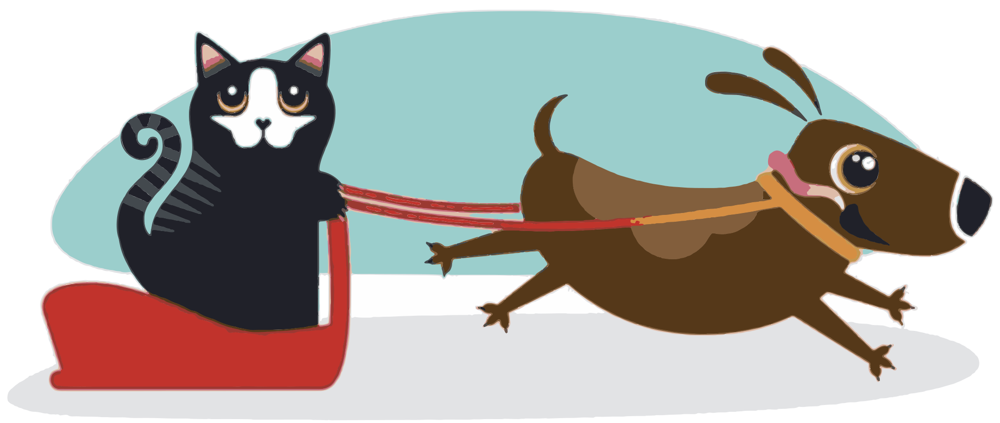

Cirugía y hospitalización
Pabellón propio para esterilizaciones y otras cirugías, con controles hasta que se recupere.
Lunes a sábado desde las 11:00
+56 9 9837 9420 Agendar
Consultas, vacunas, cirugía, baño y corte para perros y gatos. Av. Dos 2816, a cargo del Dr. Marcelo Riquelme.
Controles, vacunas y día de baño. Fotos reales de pacientes de la clínica.


4,7 de 5 con 129 opiniones
"El doctor Raúl fue delicado al vacunar a nuestro perro Apollo y nos explicó todo con claridad. Amable con todos."
Dueño de Apollo
"Al día siguiente de la cirugía de mi gatito tenía dudas y me las respondió sin problema en su consulta. Ahora está mucho mejor."
Opinión en Google
"Excelente veterinario, muy preocupado. Cuidó maravillosamente a mi Piru."
Dueña de Piru
"Excelente atención. Llevo a mi mascota y la tratan muy bien."
Opinión en Google
Elige una opción y te contamos cómo lo atendemos. El mensaje de WhatsApp queda escrito.
Consulta y vacunas
Lo revisamos completo y te contamos qué vacunas y desparasitaciones le tocan. Trae su carnet de vacunación.
Pedir hora para su vacunaPabellón propio para esterilizaciones y otras cirugías, con controles hasta que se recupere.
Baño, secado y corte en la misma clínica. Si además le toca su control, lo hacemos el mismo día.
También hacemos consulta general, vacunas y desparasitación, y controles después de cada cirugía.
Cerrillos, Región Metropolitana
| Lunes | 11:00 a 18:00 |
| Martes | 11:00 a 18:00 |
| Miércoles | 11:00 a 18:00 |
| Jueves | 11:00 a 18:00 |
| Viernes | 11:00 a 18:00 |
| Sábado | 11:00 a 15:00 |
| Domingo | Cerrado |